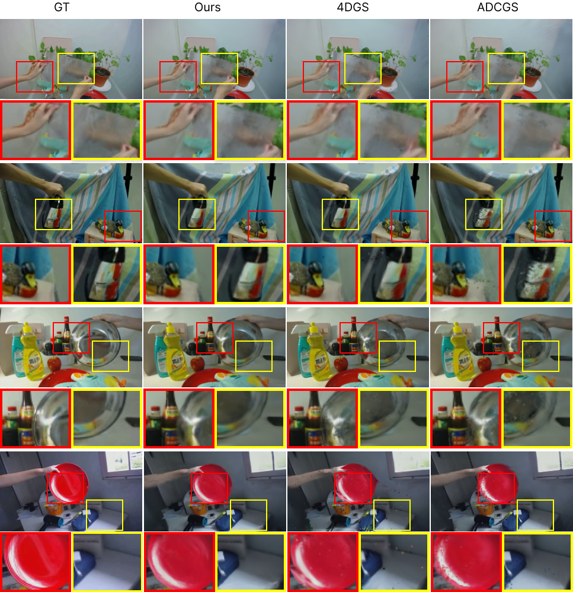
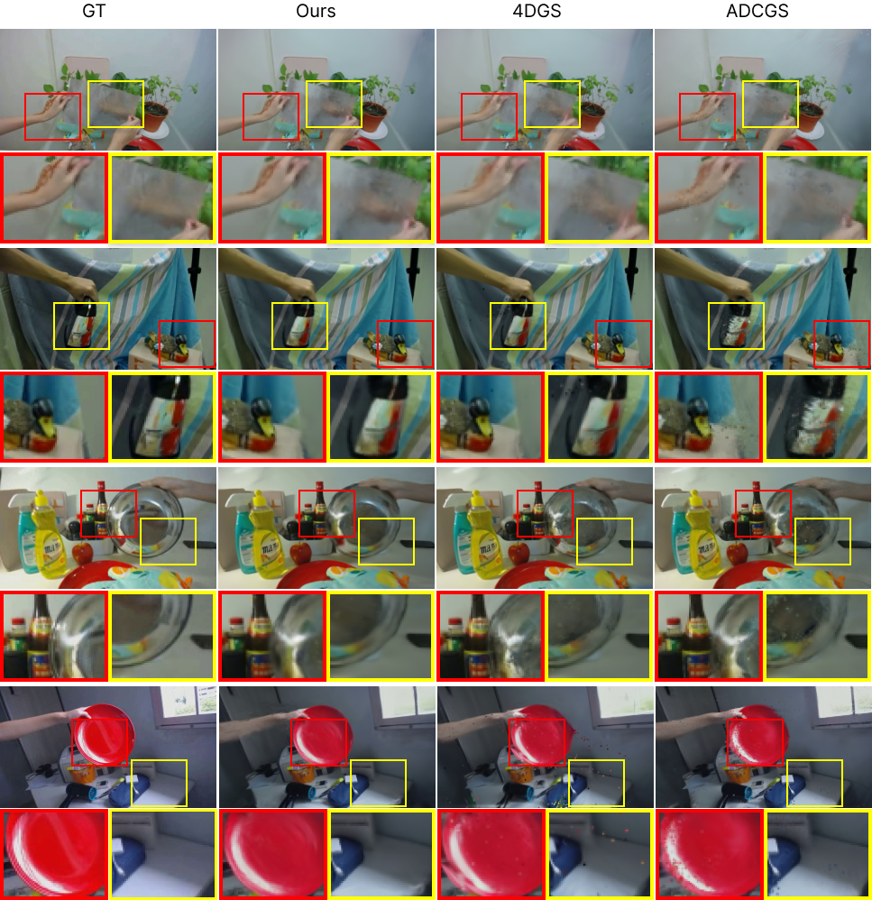

Dynamic scenes often exhibit spatially varying and non-stationary motion patterns, resulting in distinct frequency responses across different regions. This poses a significant challenge for accurate modeling. Traditional MLP-based deformation fields, limited by fixed activation functions and poor adaptability, struggle to capture local details of nonlinear motion, thereby restricting the modeling capability of dynamic Gaussian splatting.
To address these limitations, we propose Sonata, a novel Gaussian splatting framework that introduces the hierarchical modeling principle of Kolmogorov–Arnold Networks (KANs), opening a new paradigm for dynamic scene reconstruction. Unlike MLPs with fixed activation mechanisms, KANs replace each neuron with a transformable activation functions,
enabling more flexible modeling of nonlinear transformations. Moreover, to effectively decouple high- and low-frequency components in the transformation field, we design a frequency-guided learning strategy. By incorporating supervisory signals from both the wavelet and Fourier domains during training, our method explicitly guides the model to perceive and separate frequency components, avoiding convergence to local minima. This results in improved structural reconstruction accuracy, detail fidelity, and training stability.
Extensive experiments on multiple public dynamic novel view synthesis datasets demonstrate that Sonata achieves state-of-the-art performance across various metrics.
 
